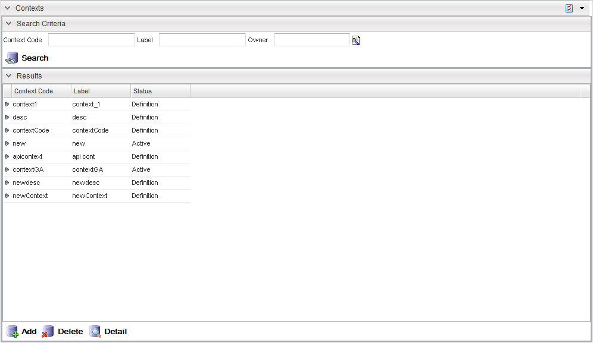

Context Types are variables that are configurable in the Product Catalog to define user specific environment such as location or market segment. Context Types variables are used to define Rules in the Product Catalog. These rules are called by the Order Management APIs to determine item availability, eligibility. For example, a Catalog item may have a rule that indicates that this item is only available to users in Canada. The item's availability rule would only specify availability in Canada only. At the Order Management application, the Catalog would only make this item available or display to users located in Canada.
While there can be multiple contexts defined, only one of them can be the defult context. Only the default context's attributes can be referenced.
Context types are non-versioned variables that are used in within the Rules. The scripts within Rules can call a context variable by theContext. For example, the value of a context variable called country is accessed using theContext.country.
The Context Search page displays all Contexts and allows for a detailed search based on Context Code, Label, or Owner criteria.
|  |
| Action | Description |
|---|---|
| Add | Opens the Context Detail dialog for creating a new Context. |
| Delete | Deletes the selected Context. |
| Detail | Opens the Context Detail form for editing the selectedContext (a row in the search results table must be selected). |